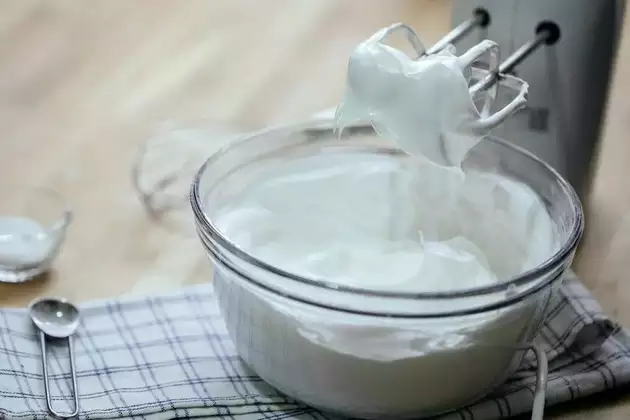

See the best cake recipes. Trusted recipes for chocolate cake, white cake, banana cakes, and carrot cakes with photos and tips from home cooks.
Making a homemade sponge cake was never so easy. Begin by mixing sugar and butter together. Whisk well until light and fluffy with a manual whisker or a fork. Once done, add the beaten eggs and blend well. Beat further so that the mixture turns white and creamy
Sift together the all-purpose flour and baking soda. It is done to evenly distribute the baking soda in flour. Gradually, add this to the egg mixture. If required, add a little milk and mix till the batter is fluffy and soft. You may not add the entire milk if you feel the consistency of your cake is fine and it pours down like canned condensed milk. Add vanilla essence and blend well. Vanilla essence is important to camouflage the smell of eggs and to make the cake taste delicious
Now, take a baking tin to cook the cake and grease it well using some butter or cooking spray. Then, sprinkle some maida or all-purpose flour on it. It will prevent the cake from sticking to the base. You can also line it with butter paper so that when the cake is baked, it can be taken out easily. Pour the prepared cake batter into the prepared tin and place it on a stand in a pressure cooker. Do not add water to the cooker and ensure that the tin does not touch the base of the cooker. You can also keep the baking dish on an inverted steel plate. Increase the flame and pressure cook for two minutes. Now, remove the whistle and cook on low flame for 35-40 minutes. If you are using an electric oven, cook at 180 degrees for 30-35 minutes
Insert a knife or a metal skewer into the cake and if it comes out clean, then the cake is ready. Remove from the oven/cooker and allow to cool on a wire rack. This cooling process is done so that the cake doesn't break down in between and comes out nice and clean. Once cooled enough, turn the cake tin upside down to remove the cake. You can also use the butter paper to lift off the cake, but you have to be a pro to make it happen quickly as it can also break the cake. So, it's better to turn the tin upside down for a better cake. Before decorating, cut an even slice of the cake from the top to prevent any doomed top. But make sure you do this step when the cake is still warm and not completely cold. Now, take some whipping cream and line the cake with it evenly and scrape any extra cream. Once done, you can use cherries to decorate the cake or even tutti-frutti, it completely depends on your choice. The cake is ready now.

To make whipping cream for a cake at home, all you need is a mixing bowl, some heavy whipping cream, powdered sugar, vanilla extract and an electric mixer. Take the bowl and add heavy whipping cream in it along with powdered sugar and vanilla extract in it. Whip them all together at medium-high speed. One must understand here that it should not be overdone. If the cream comes out grainy and curdled, it's a hint that you have over-whipped the cream. The soft whipping cream will be done in a few minutes, say about 2-3 minutes. Make sure to stop in between and check the consistency of the whipping cream. The perfect whipping cream will have a sturdy peak in it when lifted off. It should not be too soft or liquidy, and curdled or heavy. Once done, you can transfer in a cone as well to decorate your cake
